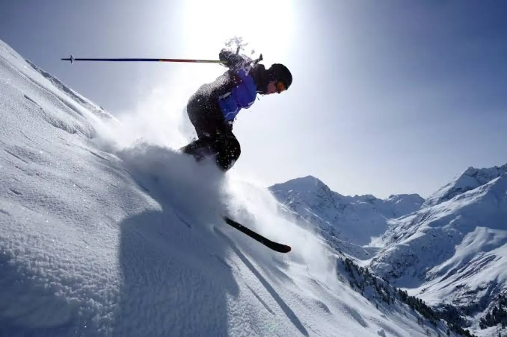

ARTICLE • September 27, 2026
Winter in the Tatras — Why It's the Best Season
Zakopane can be crowded in winter, but the Tatras in winter are quiet, white, and completely different from summer. Here are 5 reasons to come here in winter.

Many tourists visit the Tatras only in summer — and miss one of the most beautiful faces of these mountains. Winter in the Tatras is a completely different experience: silence, whiteness, mists, and views that take your breath away.
1. Empty Trails
In winter, Tatra trails empty out. You can walk through Kościeliska Valley and not meet anyone for an hour. Chochołowska Valley at sunrise becomes almost private space.
2. Snow Changes the Landscape
The same places look completely different in winter. Ridges, forest belts, mountain huts — all covered with snow, with icicles on the rocks and white silence around.
3. Thermal Baths After a Hike
Termy Podhalańskie, Termy Szaflary, Terma Bania — after a winter walk, hot water with a view of snowy peaks is a luxury that cannot be described in words.
4. Zakopane Off-Season
Krupówki in January is nicer than in August. More space, shorter queues, better atmosphere in taverns. And winter evenings by the fireplace with oscypek cheese and mulled wine — priceless.
5. A True Mountain Experience
Winter in the Tatras is a challenge — it requires proper equipment, caution, and humility. But that is precisely why a winter hike gives greater satisfaction than a summer stroll.
Practical Tips
Bring crampons, trekking poles, warm layers, and a flashlight. Check the weather forecast — winter in the Tatras can be dangerous. Never go alone into higher elevations, and if you lack experience — hire a guide.